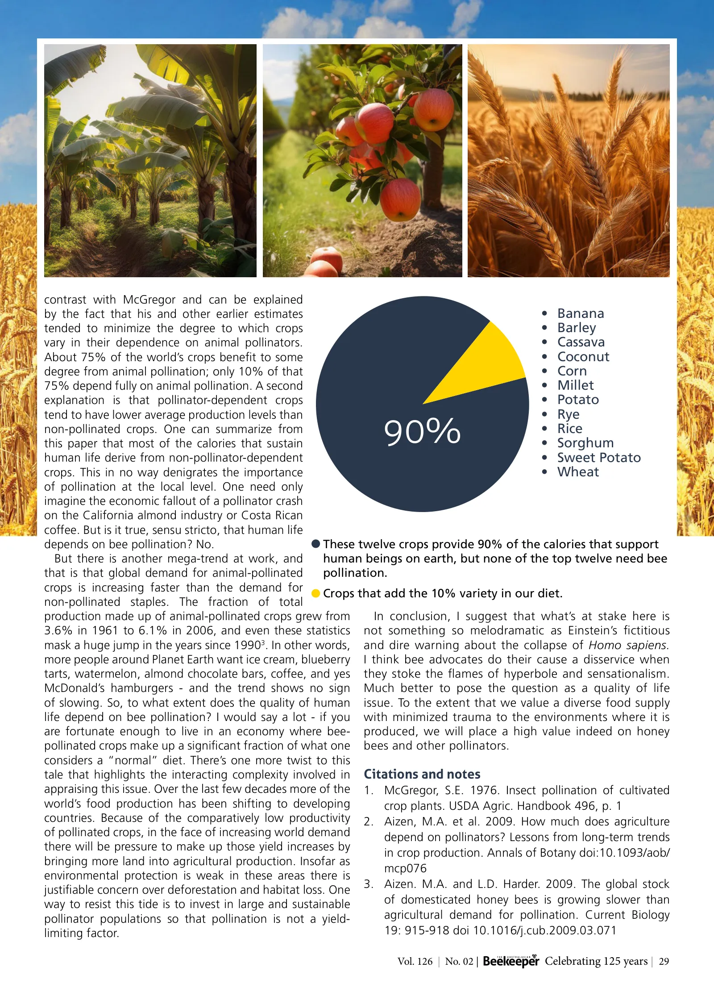

contrast with McGregor and can be explained
by the fact that his and other earlier estimates
tended to minimize the degree to which crops
vary in their dependence on animal pollinators.
About 75% of the world’s crops benefit to some
degree from animal pollination; only 10% of that
75% depend fully on animal pollination. A second
explanation is that pollinator-dependent crops
tend to have lower average production levels than
non-pollinated crops. One can summarize from
this paper that most of the calories that sustain
human life derive from non-pollinator-dependent
crops. This in no way denigrates the importance
of pollination at the local level. One need only
imagine the economic fallout of a pollinator crash
on the California almond industry or Costa Rican
coffee. But is it true, sensu stricto, that human life
depends on bee pollination? No.
But there is another mega-trend at work, and
that is that global demand for animal-pollinated
crops is increasing faster than the demand for
non-pollinated staples. The fraction of total
production made up of animal-pollinated crops grew from
3.6% in 1961 to 6.1% in 2006, and even these statistics
mask a huge jump in the years since 19903. In other words,
more people around Planet Earth want ice cream, blueberry
tarts, watermelon, almond chocolate bars, coffee, and yes
McDonald’s hamburgers - and the trend shows no sign
of slowing. So, to what extent does the quality of human
life depend on bee pollination? I would say a lot - if you
are fortunate enough to live in an economy where bee-
pollinated crops make up a significant fraction of what one
considers a “normal” diet. There’s one more twist to this
tale that highlights the interacting complexity involved in
appraising this issue. Over the last few decades more of the
world’s food production has been shifting to developing
countries. Because of the comparatively low productivity
of pollinated crops, in the face of increasing world demand
there will be pressure to make up those yield increases by
bringing more land into agricultural production. Insofar as
environmental protection is weak in these areas there is
justifiable concern over deforestation and habitat loss. One
way to resist this tide is to invest in large and sustainable
pollinator populations so that pollination is not a yield-
limiting factor.
In conclusion, I suggest that what’s at stake here is
not something so melodramatic as Einstein’s fictitious
and dire warning about the collapse of Homo sapiens.
I think bee advocates do their cause a disservice when
they stoke the flames of hyperbole and sensationalism.
Much better to pose the question as a quality of life
issue. To the extent that we value a diverse food supply
with minimized trauma to the environments where it is
produced, we will place a high value indeed on honey
bees and other pollinators.
• Banana
• Barley
• Cassava
• Coconut
• Corn
• Millet
• Potato
• Rye
• Rice
• Sorghum
• Sweet Potato
• Wheat
90%
These twelve crops provide 90% of the calories that support
human beings on earth, but none of the top twelve need bee
pollination.
Crops that add the 10% variety in our diet.
Citations and notes
1. McGregor, S.E. 1976. Insect pollination of cultivated
crop plants. USDA Agric. Handbook 496, p. 1
2. Aizen, M.A. et al. 2009. How much does agriculture
depend on pollinators? Lessons from long-term trends
in crop production. Annals of Botany doi:10.1093/aob/
mcp076
3. Aizen. M.A. and L.D. Harder. 2009. The global stock
of domesticated honey bees is growing slower than
agricultural demand for pollination. Current Biology
19: 915-918 doi 10.1016/j.cub.2009.03.071
Vol. 126 | No. 02 |
Celebrating 125 years | 29